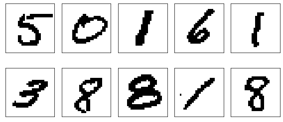
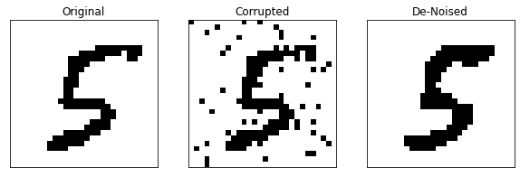
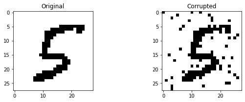
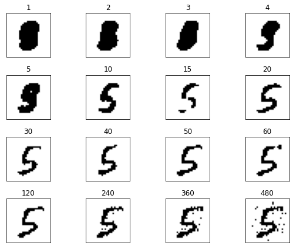
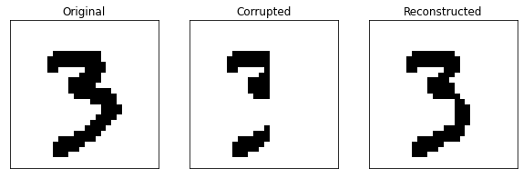

import numpy as np
import scipy
import matplotlib.pyplot as plt
from sklearn.neural_network import BernoulliRBM
from sklearn.model_selection import train_test_split
from tensorflow.keras.datasets import mnist
from joblib import dump, load
Exercise: Denoising with Restricted Boltzmann Machines¶
The restricted Boltzmann machine (RBM) can be trained as an unsupervised algorithm which aims to learn the probability distribution producing the data. We have seen that it is possible to obtain a sample from the RBM using Gibbs sampling. Having trained the RBM on a set of clean images, if we perform Gibbs sampling on a noisy image we can actually approximately recover the denoised image.
Preparations¶
First, let us load and prepare the MNIST dataset. Since we would like to use a binary RBM, it is necessary for us to convert the greyscale images into a binary image. This is done by simply applying a threshold to the data, i.e. we set the bit value to \(1\) if the pixel value passses a certain threshold.
# Dataset
(X_train, X_test), (X_test, Y_test) = mnist.load_data()
X_train = X_train.reshape(-1, 784)/255
X_test = X_test.reshape(-1, 784)/255
# Apply a threshold to binarize the image.
X_train = np.where(X_train > 0.2, 1, 0)
X_test = np.where(X_test > 0.2, 1, 0)
# Split into training and validation sets
X_train, X_val = train_test_split(
X_train, test_size=1/5,random_state=42)
Let’s plot a few images to see how these binarized images look.
plt.figure(figsize=(8,4))
for i in range(10):
plt.subplot(2,5,i+1)
plt.xticks([])
plt.yticks([])
plt.grid(False)
plt.imshow(X_train[i].reshape(28,28), cmap='Greys')
plt.tight_layout()

Fit the RBM to the training data¶
The first step is to perform the unsupervised training to fit the model (RBM in this case) to our data. Within the sklearn package, this is done using a variant of contrastive divergence known as persistent contrastive divergence. With such a scheme, one still has to pick an appropriate learning rate as well as number of training epochs. We have tried several values and found this set to work satisfactorily.
try:
# If you have access to our pretrained model
rbm = load('rbm.joblib')
print("RBM Reloaded")
except:
rbm = BernoulliRBM(random_state=0, n_components=80,
verbose=True, batch_size=20, n_iter=60, learning_rate=0.01)
rbm.fit(X_train)
dump(rbm, 'rbm.joblib')
RBM Reloaded
A good metric to track the training progress is the pseudo-likelihood. Let us evaluate this value on both the training and validation sets.
print("Training set Pseudo-Likelihood =", rbm.score_samples(X_train).mean())
print("Validation set Pseudo-Likelihood =", rbm.score_samples(X_val).mean())
Training set Pseudo-Likelihood = -81.6129329172141
Validation set Pseudo-Likelihood = -85.01972279191564
As to be expected, the likelihood of the training set is higher than that of the validation set, indicating some degree of overfitting. But as we will see this level of overfitting is still acceptable for our purposes. You might find better values if you adjust the learning rate and number of training epochs.
Denoising¶
Now, let us attempt to denoise a corrupted image. We simply take a random image from the test set and corrupt the image by flipping a random set of bits.
# Pick a random image from the test set
im_ind = 23
X_pick = X_test[im_ind]
# Choose 50 random pixels to flip
pick = np.random.choice(28 * 28, 50)
x_noisy = np.copy(X_pick)
x_noisy[pick] = ((X_pick[pick] + 1) % 2)
# Perform the denoising
k_iter = 12 # Number of Gibbs Sampling Iterations
alpha = 0.9 # Decay factor for the averaging
# Gibb sampling steps
b = rbm.gibbs(x_noisy)
x_final = np.zeros(784) + np.copy(b)
for i in range(k_iter):
b = rbm.gibbs(b)
x_final += (alpha**(i+1))*b.astype(float) # Averaging the images
# Applying a threshold to binarize the image
x_final = np.where(x_final > 0.5*np.max(x_final), 1, 0)
# Plotting the images
fig, ax = plt.subplots(1, 3, figsize=(10, 3))
ax[0].imshow(X_pick.reshape(28, 28), cmap='Greys')
ax[0].set_title('Original')
ax[1].imshow(x_noisy.reshape(28, 28), cmap='Greys')
ax[1].set_title('Corrupted')
ax[2].imshow(x_final.reshape(28, 28), cmap='Greys')
for i in range(3):
ax[i].set_xticks([])
ax[i].set_yticks([])
ax[2].set_title('De-Noised')
plt.show()

PCA Denoising¶
The denoising can actually also be done using the simplest unsupervised approach we known, namely principle component analysis. Recall that PCA gives a number, \(k\), of feature vectors \(\lbrace \boldsymbol{v}_1, \dots \boldsymbol{v}_k \rbrace\). When doing dimensionality reduction, we project our data sample onto this \(k\)-dimensional subspace. To perform denoising, on the other hand, we do not want to reduce the dimension. Therefore, we consider the \(k\)-dimensional subspace to be embedded in the full space of the data, i.e.,
class PCA:
"""
Standard PCA.
"""
def __init__(self, X):
self.xmean_ = np.mean(X,axis=0)
xtilde = X - xmean
vals, self.vecs_ = np.linalg.eigh(np.dot(xtilde.T, xtilde))
ind = np.argsort(vals)[::-1]
self.vecs_ = self.vecs_[:, ind]
def project(self, x, n_components=50):
"""
Projecting our corrupted image onto a number of PCA components and apply a threshold
"""
x_pca = np.dot(vecs[:,:n_components] ,np.dot(vecs[:,:n_components].T, x - xmean)) + self.xmean_
x_pca = np.where(x_pca > 0.5*np.max(x_pca), 1, 0)
return x_pca
# PCA
pca = PCA(X_train)
# Plotting the images
fig, ax = plt.subplots(1, 2, figsize=(10, 3))
ax[0].imshow(X_pick.reshape(28, 28), cmap='Greys')
ax[0].set_title('Original')
ax[1].imshow(x_noisy.reshape(28, 28), cmap='Greys')
ax[1].set_title('Corrupted')
plt.show()
# Lets Compare the effect of the number of components
n_components = [1, 2, 3, 4, 5, 10, 15, 20, 30, 40, 50, 60, 120, 240, 360, 480]
fig, ax = plt.subplots(4, 4, figsize=(8, 6))
ax = ax.reshape(-1)
for i in range(16):
ax[i].set_xticks([])
ax[i].set_yticks([])
ax[i].imshow(pca.project(x_noisy,n_components[i]).reshape(28, 28), cmap='Greys')
ax[i].set_title(str(n_components[i]))
plt.tight_layout()
plt.show()


We can vary see clearly that with too few components, the digit is not recognisable, on the other hand, if too many components are included, the noise is not eliminated.
Image Reconstruction¶
A similar strategy can be adopted if instead of random noise, we have some parts of our image missing. This process is then known as image reconstruction.
# Pick another random image and set some parts of the image to zero.
im_ind = 30
X_missing = X_test[im_ind].copy().reshape(28,28)
X_missing[:,15:] = 0
# Image Reconstruction
k_iter = 100 # Number of Gibbs iterations
alpha = 0.9 # Decay factor
X_recon = np.zeros((28,13)) # Array to store the reconstruction
b = X_missing.copy().reshape(-1)
for i in range(k_iter):
b = rbm.gibbs(b)
X_recon += alpha**(i) * b.reshape(28,28)[:,15:]
b.reshape(28,28)[:,:15] = X_missing[:,:15]
# Apply a threshold and complete the image
X_recon = np.where(X_recon > 0.5*np.max(X_recon), 1, 0)
X_complete = X_missing.copy()
X_complete[:,15:] = X_recon
# Plot the figures
fig, ax = plt.subplots(1, 3, figsize=(10, 3))
ax[0].imshow(X_test[im_ind].reshape(28, 28), cmap='Greys')
ax[0].set_title('Original')
ax[1].imshow(X_missing, cmap='Greys')
ax[1].set_title('Corrupted')
ax[2].imshow(X_complete.reshape(28,28), cmap='Greys')
ax[2].set_title('Reconstructed')
for i in range(3):
ax[i].set_xticks([])
ax[i].set_yticks([])
plt.show()

As to be expected, the Gibbs sampling manages to complete the image reasonably well.